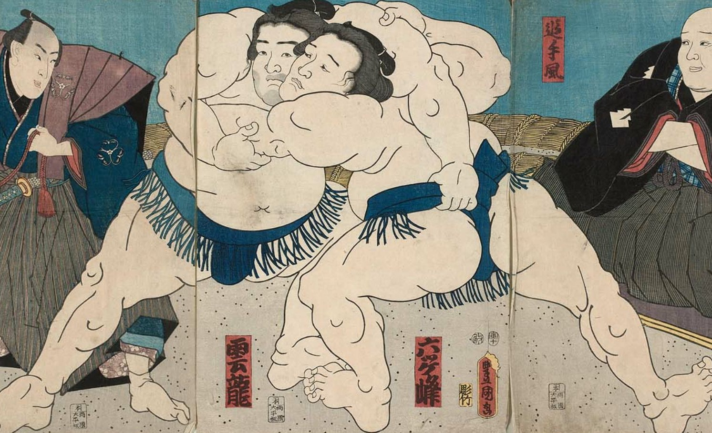
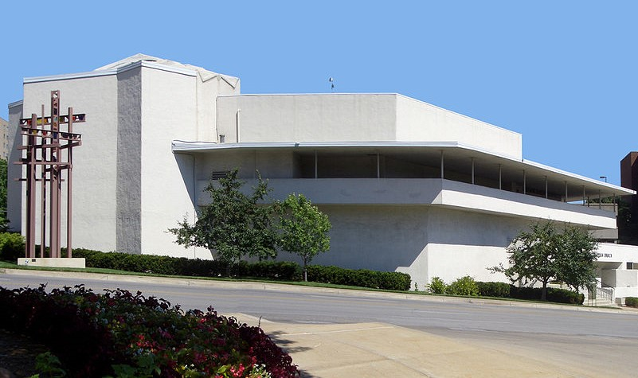

The Great Wave off Kanagawa by Katsushika Hokusai (1760-1849)
Welcome to an (incomplete) selection of Japanese ukiyo-e artists
By Utagawa Hiroshige (1797-1858)
Hiroshige is the second most famous woodblock artist and lived around same time as Hokusai (previous)
By Utagawa Hiroshige
Some of Hiroshige's prints, inspired a world-famous Dutch artist: ...
By Van Gogh(1853-1890)
... It is Van Gogh in his later years.
By Utagawa Kuniyoshi (1798-1861)
Kuniyoshi bears the same artist name as Hiroshige: they are of the same Utagawa school. It is an old school and legacy that learned much from Dutch art in their early days.

By Utagawa Kunisada (1786-1865)
Tsukioka Yoshitoshi (1839-1892)
Is konwn to have been particularly interested in foreign art.
By Hasui Kawase (1883-1957)
Part of the New Print Movement that was inpsired by European impressionism.

By Frank Lloyd Wright (1867-1959)
Another artist inspired by Japanese art: Wright is famous for his creative architectural style.